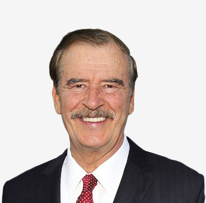

John c. cushman
Chairman,Cushman & Wakefield

PRESIDENT VICENTE FOX
Former President of Mexico
RICHARD P CRANE JR.
Lawyer and Member of U.S. Department of Justice
JEFF BROWN
Brown Equity Partners. Head of Advisory
JOANNA RILEY
Top Women Entrepreneur CEO of Censia
MATTHEW BULLOCK
Master of St Edmund's College, Cambridge(UK)
SIMON HOPKINS
CEO Milltrust International and Chairman EICM
Dr. DAVID WHITEHOUSE
Chief Medical Advisor
HARVEY RUBIN, MD, PHD
Professor of Medicine